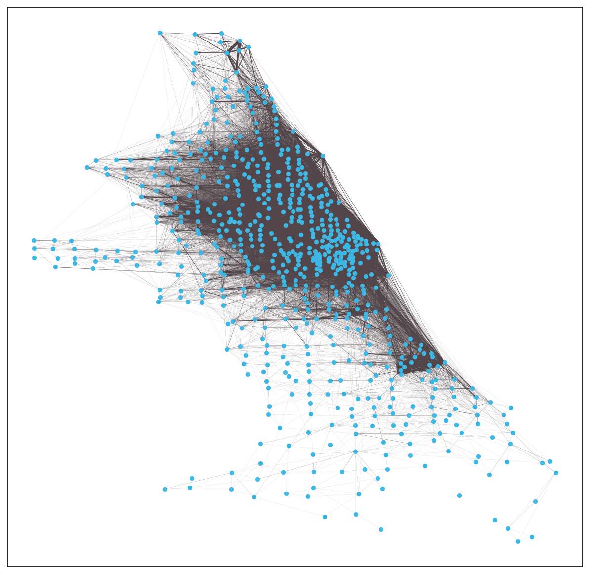
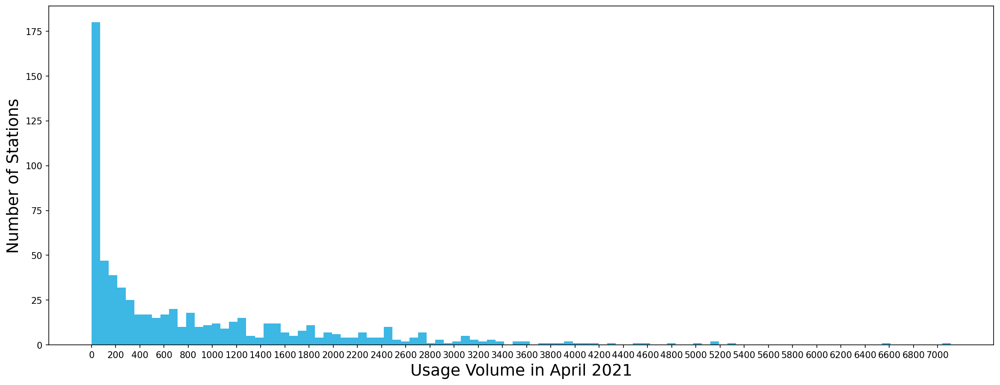
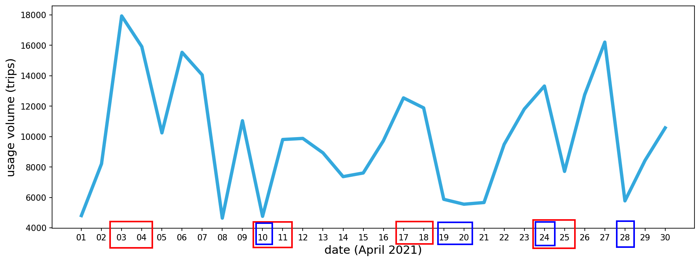
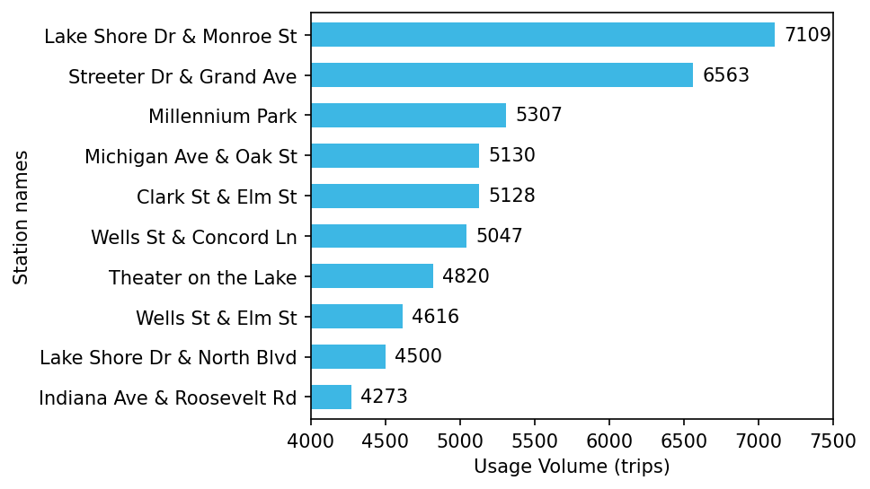
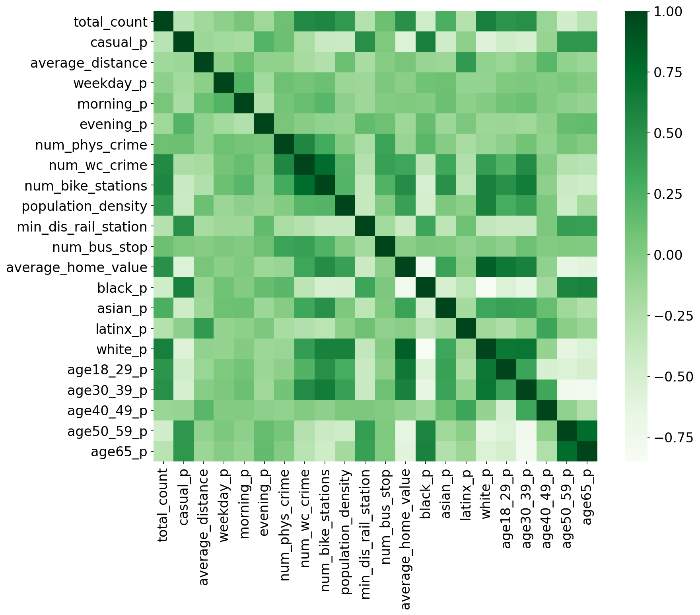

Introduction
Figure 1: network graph of Chicago Divvy bike stations and trips (April 2021)

Figure 2: distribution of divvy bike stations by usage volume (April 2021)

Overview of Divvy historic trip data (April 2021)
Figure 3: distribution of station-to-station divvy bike trip by date (April 2021)

Figure 4: distribution of station-to-station divvy bike trip by hours of the day (April 2021)

Figure 5: top 10 divvy bike stations with the highest usage volume (April 2021)

Introducing the six groups of hypotheses
Table P7: summary table of all variables
| Variables |
count |
mean |
std |
min |
25% |
50% |
75% |
max |
| total_count |
681 |
875.8 |
1,084.9 |
1 |
62 |
431 |
1,335 |
7,109 |
| casual_p |
681 |
0.48 |
0.22 |
0.00 |
0.32 |
0.40 |
0.58 |
1.00 |
| average_distance |
681 |
0.024 |
0.008 |
0.000 |
0.019 |
0.023 |
0.027 |
0.068 |
| weekday_p |
681 |
0.70 |
0.11 |
0.00 |
0.65 |
0.70 |
0.75 |
1.00 |
| morning_p |
681 |
0.21 |
0.09 |
0.00 |
0.17 |
0.21 |
0.25 |
1.00 |
| evening_p |
681 |
0.12 |
0.09 |
0.00 |
0.07 |
0.10 |
0.14 |
1.00 |
| num_phys_crime |
681 |
17.6 |
13.5 |
0 |
8 |
15 |
24 |
75 |
| num_wc_crime |
681 |
35.2 |
35.1 |
0 |
15 |
26 |
41 |
223 |
| num_bike_stations |
681 |
7.3 |
7.3 |
0 |
2 |
5 |
10 |
35 |
| population_density |
681 |
16,949 |
7,998 |
1,259 |
10,459 |
15,920 |
21,570 |
35,505 |
| min_dis_rail_station |
681 |
0.012 |
0.016 |
0.000 |
0.003 |
0.007 |
0.014 |
0.110 |
| num_bus_stop |
681 |
5.1 |
3.5 |
0 |
2 |
5 |
7 |
16 |
| average_home_value |
662 |
368,676 |
150,505 |
86,191 |
219,731 |
379,250 |
503,115 |
662,782 |
| black_p |
664 |
0.30 |
0.33 |
0.01 |
0.05 |
0.15 |
0.56 |
0.95 |
| asian_p |
664 |
0.10 |
0.10 |
0.00 |
0.03 |
0.07 |
0.14 |
0.39 |
| latinx_p |
664 |
0.15 |
0.16 |
0.01 |
0.06 |
0.08 |
0.18 |
0.83 |
| white_p |
664 |
0.42 |
0.27 |
0.01 |
0.15 |
0.46 |
0.64 |
0.82 |
| age18_29_p |
664 |
0.25 |
0.08 |
0.12 |
0.18 |
0.24 |
0.30 |
0.47 |
| age30_39_p |
664 |
0.20 |
0.08 |
0.11 |
0.14 |
0.20 |
0.24 |
0.46 |
| age40_49_p |
664 |
0.12 |
0.02 |
0.07 |
0.11 |
0.12 |
0.13 |
0.16 |
| age50_59_p |
664 |
0.11 |
0.03 |
0.06 |
0.08 |
0.11 |
0.12 |
0.17 |
| age65_p |
664 |
0.11 |
0.04 |
0.01 |
0.08 |
0.11 |
0.14 |
0.21 |
Figure P7: variable correlation heatmap

Results
Table P8: OLS regression results

Table P9: summary of the hypothesis testing results
| Hypotheses |
variables (in log scale) |
hypothesized association with
station usage volume |
whether supported by regression results |
| H1a |
proportion of casual riders (one time payment) |
positive |
No |
| H1b |
average trip distance |
negative |
Yes |
| H1c |
proportion of weekday or morning trips |
negative |
Opposite (positive) |
| H2a |
number of physical crime cases nearby |
negative |
Yes |
| H2b |
number of white collar crime cases nearby |
positive |
Yes |
| H3a |
number of divvy bike stations nearby |
negative |
Opposite (positive) |
| H3b |
population density nearby |
positive |
Yes |
| H4 |
distance to the nearest rail station,
number of bus stops nearby |
positive |
No |
| H5 |
average home value nearby |
inverse U shaped curve |
Opposite (U shaped curve) |
| H6a |
racial compositions of population nearby |
exist association |
Yes (positive for asian and white,
negative for hispanic, no association for black) |
| H6b |
proportion of young people nearby |
positive |
Yes |
Next Step